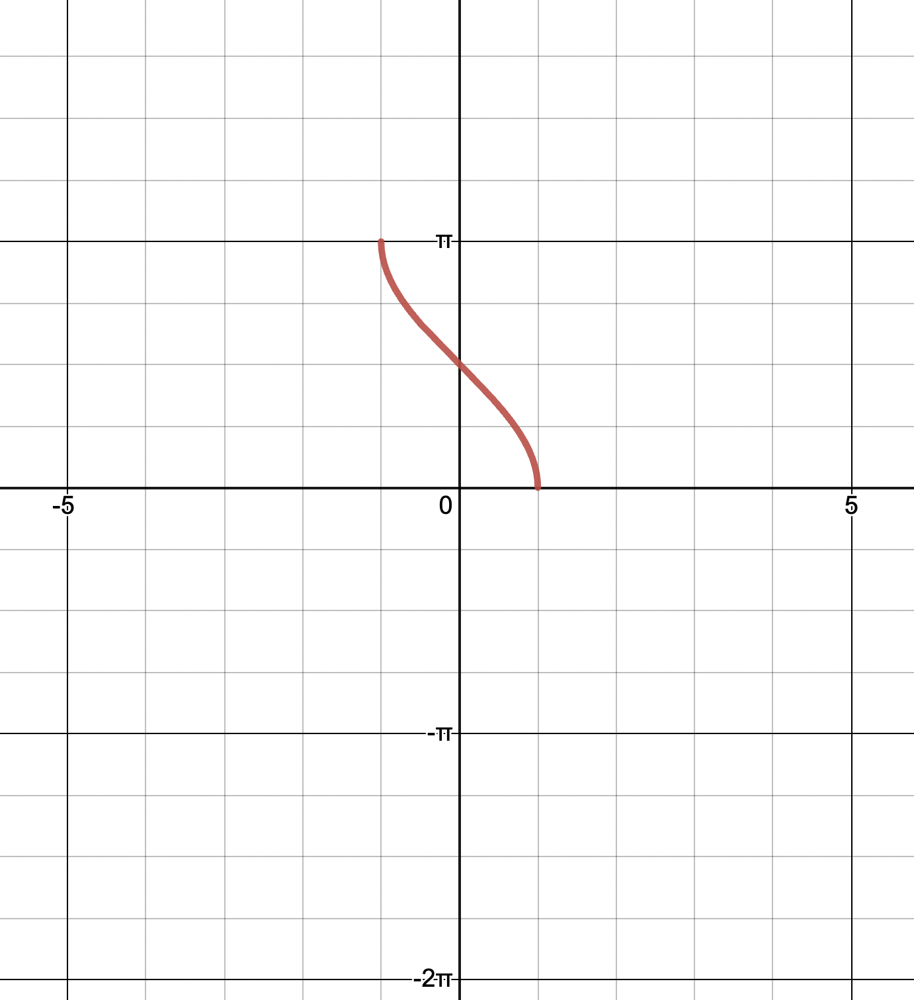
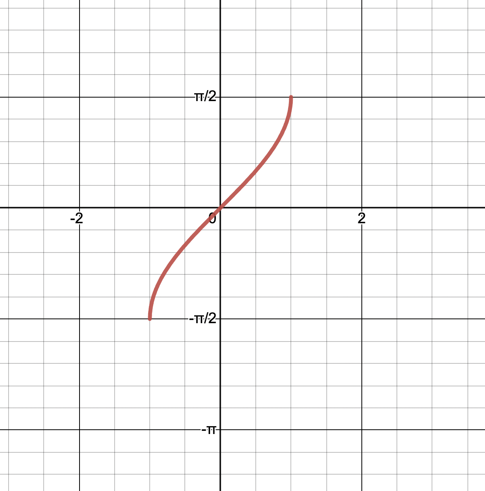
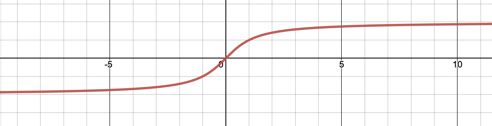

Assumed Knowledge (from methods)
- Angles in degrees in radians (and converting between units).
- Defining sin and cos using the unit circle.
- Graphs of y = sinx, y = cosx and y = tanx.
- The pythagorean identity.
- Symmetry properties of trig functions.
- Exact values of trig functions for integer multiples of , , and radians.
Sketch the graph of the function
h: [0, 2pi] -> , h(x) = dilations first, followed by translations, provided it is written in the factorised form.
General solutions to trig equations.
recap
- sin (x) = 1/2
- we said within one revolution of a unit circle, there exists two solutions for this statement.
- 2 out of infinity many solutions, with other solutions that can be obtained by some number of revolutions around the unit circle.
- in general, , for some integer k
more on general solutions
-
for the trigonometric equation such as . there exists infinitely many solutions.
-
if you put the equation in a calculator, <- only 1 definite value, out of infinite values is given, not even two values of the unit circle.
- how does the calculator decide which value to give?
- there exists a rule/notion of what an inverse of a trig function gives you.
-
think of as a function, such value -> -> angle
- we need to define a range for the possible outputs
- by convention, has range
- by convention, the graph of is:
- 
- has range
- 
- has range
- 
- we need to define a range for the possible outputs
-
consider the trig equation
-
by convention,
-
the solution in the reflected position can be negative
-
this can be expressed as
-
consider the trig equation - a calculator gives - the other solution is - so general solution is - or
dont have to write in this form, but you may see this form in questions!
-
relationship between b and period is that b = 2pi/period for y = cos(bx)
proving trigonometric identities
- prove LHS and RHS
- e.g. prove that
- write
- (using )
- (using pythagorean identity)
- Thus for all
- usually its better to start with the side that looks more complex as the LHS.
- there are exceptions though.
reciprocal trigonometric functions
-
sec theta = 1/costheta
-
cosec theta = 1/sintheta
-
cot theta = 1/tan theta (= costheta/sintheta)
-
an untranslated sec graph will have a minimum point on the y axis, so we can say there has been no hroizontal translation. so we can say the value of a is positive, as we expect the value to be a positive 3
- if a = 3, then c = 0 (what is going on)
-
sec x = 1/cos(x)
-
however, 3sec(2x)+1 != 1/3(cos(2x))+1
- you cant do the translation on cosine, then getting the reciprocal - it just wont work XDDDDDDDD.
9C: compound and double angle formula
- sin(A+B) = sinA + sinB??????
- f(x) = x + 3
- f(a+b) = a + b + 3
- f(a) + f(b)
- = a + 3 + b + 3
- a + b + b
- != f(a + b)
- therefore it is not equal
angle sum and difference identities
- how to prove (or derive) them:
- start by deriving cos(A-b) = cosAcosB + sinAsinB
- who knows now
double angle formulae
- cos(A+A) = cosAcosA - sinAsinA
- cos(2A) =
- do 9C yayayayayayayayayay
how to use the compound angle formulas
- determine exact values for sin 15
- sin 15 = sin (45 - 30!!!!!!!!!!!!!)
- find exact value of sin (A+ B) = sinAcosB + cosAsinB :DDDDD yay
- since A is acute, sin A = 12/13 (for another question)